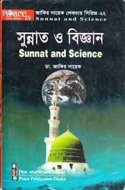

এই বইটি সুন্নাত ও বিজ্ঞানের সম্পর্ক নিয়ে আলোচনা করে। লেখক সুন্নাতের বৈজ্ঞানিক দিকগুলি তুলে ধরেছেন এবং কিভাবে সুন্নাত আমাদের দৈনন্দিন জীবনে প্রভাব ফেলে তা ব্যাখ্যা করেছেন। বইটি সুন্নাতের বিভিন্ন দিক যেমন স্বাস্থ্য, সুন্নাহ বিজ্ঞান, এবং জীবনযাত্রার সাথে বিজ্ঞানের সম্পর্ক বিশ্লেষণ করে এবং পাঠকদের জন্য একটি সমৃদ্ধ জ্ঞান সরবরাহ করে।
Download PDFএই বইটি ইমাম আত-তিরমিজির লেখা গুরুত্বপূর্ণ একটি গ্রন্থ। এই বইয়ে রাসূল (সা:) এর জীবন, চরিত্র, হাটা চলা, দেখতে কেমন ছিলেন এবং তিনি সরাদিন কি কি করতেন রাসূলের লাইফস্টাইল নিয়ে লিখা আছে এবং সুন্নাতের বিভিন্ন দিক নিয়ে আলোচনা করা হয়েছে।
Download PDF